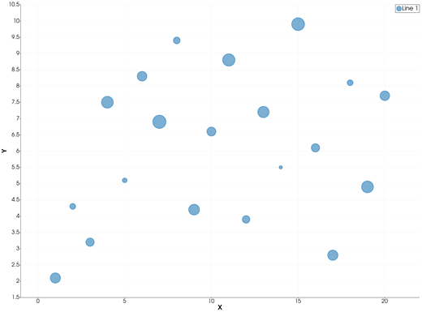
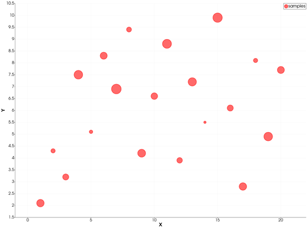
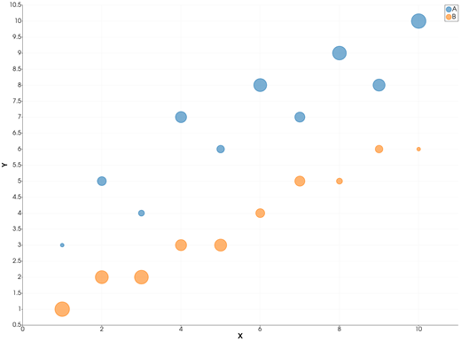

bubblechart — Bubble Chart
The bubblechart icon on the X,Y Plot tool's gallery row draws each series of the current page as bubbles: a filled, see-through circle at every point, its size given by a third value per point. From Julia, the sizes are given to plot as a vector ms, one size per point — GMT.jl's own form of bubblechart.
Syntax
p = plot(x, y; ms=sz)
p = plot(x, y; ms=sz, key=value, ...)
plot!(p, x, y; ms=sz)Description
plot(x, y; ms=sz)draws a bubble at each point(x, y), withszholding one size value per point.- The bubble area grows linearly with the size value, from the series' smallest value to its largest. The smallest is 5 points across and the largest 20 points, MATLAB's default bubble size range. When every value is the same, all bubbles are the middle size.
- A size that is
NaNdraws no bubble for that point. - Bubbles are filled in the series' colour, see-through so overlapping bubbles show, with an outline of the same colour.
A number for ms (not a vector) is an ordinary marker size: see plot.
The bubblechart icon
Clicking bubblechart on the gallery row re-plots the current page as bubbles, with the sizes its series carry. A series without sizes opens the Bubble sizes dialog for it:
- Series — the series that becomes bubbles.
- Values from — another series of the page (its Y values, row by row), or a Constant.
- Value — the constant.
- Hide the series the values come from — that series' numbers are now the sizes, so its own line is hidden (not deleted).
Series that still carry no sizes stay lines.
Running the Examples
Paste each example into the iGMT window's Julia console, or into the Julia REPL after using InteractiveGMT. Each one is complete on its own and draws a new page of the X,Y Plot window.
Examples
Create Bubble Chart
Define x and y as 20 points, and sz as their sizes.
x = 1:20
y = [2.1, 4.3, 3.2, 7.5, 5.1, 8.3, 6.9, 9.4, 4.2, 6.6, 8.8, 3.9, 7.2, 5.5, 9.9, 6.1, 2.8, 8.1, 4.9, 7.7]
sz = [9, 3, 6, 12, 2, 8, 15, 4, 10, 7, 13, 5, 11, 1, 14, 6, 9, 3, 12, 8]
p = plot(x, y; ms=sz)
Specify the Bubble Colour
x = 1:20
y = [2.1, 4.3, 3.2, 7.5, 5.1, 8.3, 6.9, 9.4, 4.2, 6.6, 8.8, 3.9, 7.2, 5.5, 9.9, 6.1, 2.8, 8.1, 4.9, 7.7]
sz = [9, 3, 6, 12, 2, 8, 15, 4, 10, 7, 13, 5, 11, 1, 14, 6, 9, 3, 12, 8]
p = plot(x, y; ms=sz, lc=:red, legend="samples")
Plot Two Sets of Bubbles
Each call adds one set, in the next colour of the palette. The two sets are sized independently: each maps its own smallest and largest value to the bubble range.
x = 1:10
p = plot(x, [3, 5, 4, 7, 6, 8, 7, 9, 8, 10]; ms=[1, 4, 2, 6, 3, 8, 5, 9, 7, 10], legend="A")
plot!(p, x, [1, 2, 2, 3, 3, 4, 5, 5, 6, 6]; ms=[10, 8, 9, 6, 7, 4, 5, 2, 3, 1], legend="B")
Take the Sizes from Another Series
With x, y and the sizes as the three columns of a table, draw it with multicol=true, then click bubblechart: in the dialog keep Series: Line 1 and pick Values from: Series: Line 2.
x = 1:15
p = plot([x sqrt.(x) x .^ 2]; multicol=true)Input Arguments
x, y — the points, as in plot.
sz — bubble sizes, a vector with one value per point, in any units: only their spread matters, mapped onto the bubble range.
Keywords
| Keyword | Values | Default |
|---|---|---|
ms, markersize, size | a vector: one bubble size per point | none |
lc, linecolor | the bubbles' colour | next palette colour |
legend | the series' name, in the legend and the Object Manager | "Line n" |
The sizes are kept with the series: they are saved in an X,Y session, and File > Plot with GMT.jl writes the bubbles as circles with a per-point ms.
See Also
plot — 2-D Line Plot · errorbar — Line Plot with Error Bars · X,Y Plot Tool